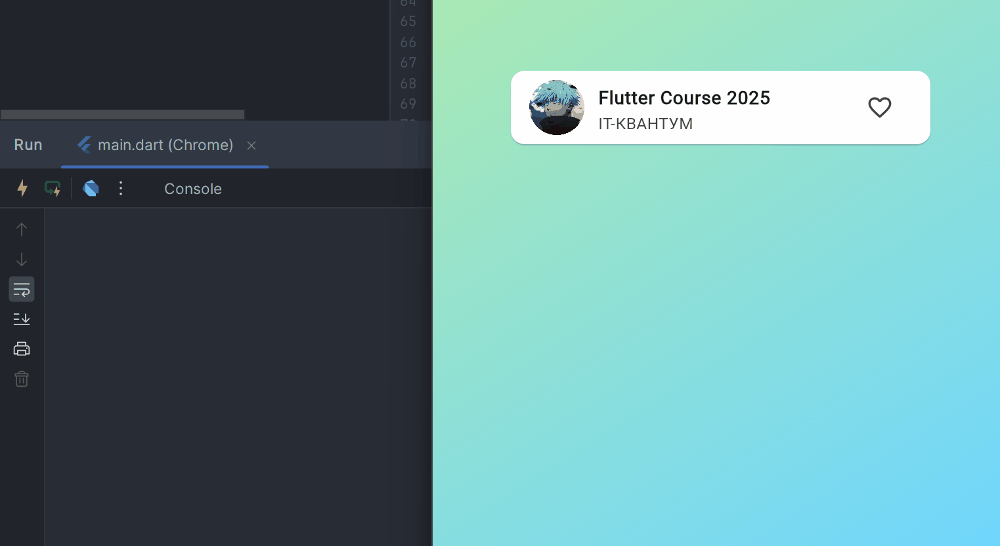

Урок: Lifting State Up и Provider
Проблема Lifting State Up
В реальных приложениях данные хранятся централизованно: в базе данных, модели, сервисе. Когда каждое вложенное представление само хранит и обновляет своё состояние, приложение быстро превращается в хаос: повторяющиеся данные, сложная отладка и постоянные перерисовки.
Чтобы синхронизировать состояние по иерархии Flutter-виджетов, приходится поднимать данные выше и передавать их через конструкторы. Такой процесс называют Lifting State Up.
- Все состояния (например,
title,author,isFavorite) живут на самом верхнем уровне. - Обработчики (callbacks) тоже прописываются наверху и пробрасываются вниз.
- Каждый виджет обязан принять нужные параметры и передать дальше.
Посмотрим, как выглядит ручное поднятие состояния.
Поднимаем состояние вручную
Шаг 1. Делаем корневой виджет MyApp stateful и храним в нём состояние карточки.
Файл main.dart — состояние в корне


import 'package:flutter/material.dart';
import 'package:flutter_application_1/1_stateless_widget.dart';
void main() => runApp(const MyApp());
class MyApp extends StatefulWidget {
const MyApp({super.key});
@override
State<MyApp> createState() => _MyAppState();
}
class _MyAppState extends State<MyApp> {
String title = "Flutter Course 2025";
String author = "IT-Квантум";
bool isFavorite = false;
void onLike() {
setState(() {
isFavorite = !isFavorite;
});
}
@override
Widget build(BuildContext context) {
return MaterialApp(
title: "Flutter Course 2025",
debugShowCheckedModeBanner: false,
theme: ThemeData(
colorScheme: ColorScheme.fromSeed(seedColor: Colors.greenAccent),
fontFamily: "Montserrat",
),
home: Scaffold(
body: HomeWidget(
title: title,
author: author,
isFavorite: isFavorite,
onLike: onLike,
),
),
);
}
}
class HomeWidget extends StatelessWidget {
final String title;
final String author;
final bool isFavorite;
final VoidCallback onLike;
const HomeWidget({
super.key,
required this.title,
required this.author,
required this.isFavorite,
required this.onLike,
});
@override
Widget build(BuildContext context) {
debugPrint("💛HomeWidget build");
return Container(
decoration: const BoxDecoration(
gradient: LinearGradient(
colors: [Color(0xFFBFF098), Color(0xFF6FD6FF)],
begin: Alignment.topLeft,
end: Alignment.bottomRight,
),
),
child: SafeArea(
child: Center(
child: Padding(
padding: const EdgeInsets.all(64.0),
child: TrackCard(
title: title,
author: author,
isFavorite: isFavorite,
onLike: onLike,
),
),
),
),
);
}
}
Шаг 2. Каждый дочерний виджет принимает свои параметры и пробрасывает их дальше.
Файл 1_stateless_widget.dart — проброс параметров
import 'package:flutter/material.dart';
class TrackCard extends StatelessWidget {
final String title;
final String author;
final bool isFavorite;
final VoidCallback onLike;
const TrackCard({
super.key,
required this.title,
required this.author,
required this.isFavorite,
required this.onLike,
});
@override
Widget build(BuildContext context) {
debugPrint("💛TrackCard build");
return Card(
color: Colors.white,
child: ListTile(
leading: Image.asset("assets/images/s.png"),
title: TitleWidget(title: title),
subtitle: SubtitleWidget(author: author),
trailing: LikeButton(
isFavorite: isFavorite,
onLike: onLike,
),
),
);
}
}
class TitleWidget extends StatelessWidget {
final String title;
const TitleWidget({super.key, required this.title});
@override
Widget build(BuildContext context) {
debugPrint("💛TitleWidget build");
return Text(
title,
style: const TextStyle(fontWeight: FontWeight.bold),
);
}
}
class SubtitleWidget extends StatelessWidget {
final String author;
const SubtitleWidget({super.key, required this.author});
@override
Widget build(BuildContext context) {
debugPrint("💛SubtitleWidget build");
return Text(author.toUpperCase());
}
}
class LikeButton extends StatelessWidget {
final bool isFavorite;
final VoidCallback onLike;
const LikeButton({
super.key,
required this.isFavorite,
required this.onLike,
});
@override
Widget build(BuildContext context) {
debugPrint("💛LikeButton build");
return IconButton(
onPressed: onLike,
icon: isFavorite
? const Icon(Icons.favorite, color: Colors.red)
: const Icon(Icons.favorite_border),
);
}
}
Теперь всё работает, но каждый уровень иерархии знает слишком много о состоянии. Нужно постоянно передавать одинаковые параметры, а при каждом изменении состояния Flutter перестраивает всю цепочку.
Почему это неудобно
Любое изменение isFavorite заставляет перестраиваться все виджеты, даже те, кто не использует это состояние. Чем больше приложение, тем заметнее удар по производительности.
Минусы ручного поднятия состояния
- Много «прокладок» в конструкторе у каждого виджета.
- Сложно масштабировать и переиспользовать компоненты.
- Все уровни подписаны на одно и то же обновление — происходит массовый rebuild.

Массовые перерисовки при ручном Lifting State Up

Хотим управлять состоянием в одном месте и перерисовывать только те виджеты, которые действительно зависят от данных. Поможет популярный пакет provider.
Устанавливаем Provider
Шаг 1. Находим пакет на pub.dev.


Шаг 2. Добавляем зависимость в pubspec.yaml.
Файл pubspec.yaml
dependencies:
flutter:
sdk: flutter
cupertino_icons: ^1.0.8
provider: ^6.1.5+1
dev_dependencies:
flutter_test:
sdk: flutter
flutter_lints: ^5.0.0
flutter:
uses-material-design: true
assets:
- assets/images/
После обновления зависимостей запустите flutter pub get, чтобы скачать пакет.
Шаг 3. Организуем код в папках:
lib/modelslib/providerslib/views
Готовим провайдер данных
Создадим TrackProvider, который будет хранить, менять и оповещать слушателей об изменении состояния.
Файл lib/providers/track_provider.dart
import 'package:flutter/foundation.dart';
class TrackProvider extends ChangeNotifier {
final String _author;
final String _title;
bool _isFavorite = false;
TrackProvider(this._author, this._title);
String get title => _title;
String get author => _author;
bool get isFavorite => _isFavorite;
void toggleFavorite() {
_isFavorite = !_isFavorite;
notifyListeners();
}
}
Метод notifyListeners() сообщит всем подписчикам, что данные изменились, и нужно перерисовать только их.
Используем Provider в виджетах
Теперь можем оставить все виджеты stateless. Они будут брать данные напрямую из провайдера через context.read или context.watch.
Файл lib/views/track_card.dart
import 'package:flutter/material.dart';
import 'package:flutter_application_1/providers/track_provider.dart';
import 'package:provider/provider.dart';
class TrackCard extends StatelessWidget {
const TrackCard({super.key});
@override
Widget build(BuildContext context) {
debugPrint("💛TrackCard build");
return Card(
color: Colors.white,
child: ListTile(
leading: Image.asset("assets/images/s.png"),
title: const TitleWidget(),
subtitle: const SubtitleWidget(),
trailing: const LikeButton(),
),
);
}
}
class TitleWidget extends StatelessWidget {
const TitleWidget({super.key});
@override
Widget build(BuildContext context) {
final title = context.read<TrackProvider>().title;
debugPrint("💛TitleWidget build");
return Text(
title,
style: const TextStyle(fontWeight: FontWeight.bold),
);
}
}
class SubtitleWidget extends StatelessWidget {
const SubtitleWidget({super.key});
@override
Widget build(BuildContext context) {
final author = context.read<TrackProvider>().author;
debugPrint("💛SubtitleWidget build");
return Text(author.toUpperCase());
}
}
class LikeButton extends StatelessWidget {
const LikeButton({super.key});
@override
Widget build(BuildContext context) {
final isFavorite = context.watch<TrackProvider>().isFavorite;
debugPrint("💛LikeButton build");
return IconButton(
onPressed: () => context.read<TrackProvider>().toggleFavorite(),
icon: isFavorite
? const Icon(Icons.favorite, color: Colors.red)
: const Icon(Icons.favorite_border),
);
}
}
context.watch подписывает кнопку на изменения. Остальные виджеты используют context.read и не перерисовываются при каждом лайке.
Подключаем Provider в приложении
Обернём приложение в ChangeNotifierProvider, чтобы передать провайдер во всё дерево виджетов.
Файл lib/main.dart — итоговая схема
import 'package:flutter/material.dart';
import 'package:flutter_application_1/providers/track_provider.dart';
import 'package:flutter_application_1/views/track_card.dart';
import 'package:provider/provider.dart';
void main() {
runApp(
ChangeNotifierProvider(
create: (_) => TrackProvider("IT-Квантум", "Flutter Course 2025"),
child: const MyApp(),
),
);
}
class MyApp extends StatelessWidget {
const MyApp({super.key});
@override
Widget build(BuildContext context) {
return MaterialApp(
title: "Flutter Course 2025",
debugShowCheckedModeBanner: false,
theme: ThemeData(
colorScheme: ColorScheme.fromSeed(seedColor: Colors.greenAccent),
fontFamily: "Montserrat",
),
home: const Scaffold(
body: SafeArea(
child: Center(
child: Padding(
padding: EdgeInsets.all(64.0),
child: TrackCard(),
),
),
),
),
);
}
}
Provider заставляет перерисовываться только LikeButton
Итоги
- Ручной Lifting State Up помогает быстро наладить обмен данными, но перегружает иерархию.
- Provider выносит состояние в отдельный класс и уведомляет только нужные виджеты.
- Виджеты остаются Stateless, а производительность растёт за счёт точечной подписки.
Используйте provider (или похожие решения), когда данные нужны многим компонентам. Так вы уменьшите количество дублирования и получите масштабируемую архитектуру.